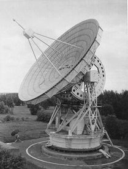
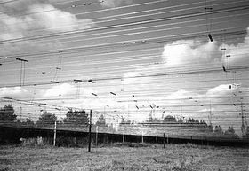
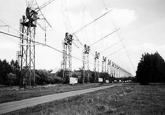

Радиоастромическая обсерватория в Пущино
Был первый день весны. Ранним утром стройные ряды первокурсников, несмотря на мелко моросящий дождик, подбирались к станции электрички. Стороннему наблюдателю тяжело было представить, что заставило этих как обычно не выспавшихся физтехов отправиться в очевидно долгий и трудный путь. Но вовсе это не что, а КТО... И не заставил, а вдохновил... Василий Семенович Бескин - заместитель зав. кафедрой проблем физики и астрофизики В. Л. Гинзбурга - обычно ведет свои дополнительные семинары по астрофизике с горящими глазами, увлекая первокурсников все новыми темами и идеями. Вот и на этот раз он предложил устроить экскурсию в радиоастрономический центр в Пущино. Дорога показалась недолгой - всего 3 часа оживленных бесед и мы были на месте (Пущино находится в 100 км к югу от Москвы).
Когда-то здесь раскидывались колхозные поля, потом в нашей стране появилась радиоастрономия, и площадка оказалась очень подходящей для строительства радиотелескопов. Позже здесь появились биологические институты, и сформировался городок Пущино. А еще позже в нашей стране появилась Останкинская телебашня, и оказалось, что площадка центра находится в прямой видимости. Сигнал от башни на несколько порядков превосходит сигналы от звезд, принимаемые телескопом. Но ученые как-то выкручиваются.
Кстати о слабости сигнала от звезд... На одной международной конференции был случай. На столе лежал листок бумаги, люди подходили, брали в руки и читали на нем следующее: «Подняв этот лист бумаги вы затратили энергии больше, чем приняли все радиотелескопы мира за всю историю радиоастрономии». Так вот, самый плодотворный в плане наблюдений период за последние годы был после пожара на Останкинской телебашне. Слава Богу, что хоть кому-то было хорошо...
Итак, в полдень мы приехали в Пущино. Город как бы поделен на две части - жилую и научную.
Говорят, когда-то можно было видеть суточные миграции населения из одной части в другую. Мы шли по дороге, мимо нас изредка проезжали машины - трудно было представить, что здесь когда-то было поле. Сейчас здесь много домов, высокие ели, просторные парки. Мы пришли в уютное здание, оставили верхнюю одежду на вешалках без каких-либо номерков или гардеробщиц и пошли в столовую. Нас очень вкусно покормили и повели на экскурсию по обсерватории и к телескопам. В центре три радиотелескопа. Один коротковолновый и два длинноволновых. Коротковолновый телескоп - 22-метровая тарелка - был создан в 50-е годы одним из первых в своем роде. До его создания наблюдения велись не менее чем в сантиметровом диапазоне. На нем же качество поверхности позволило вести наблюдения в миллиметровом диапазоне. Ныне принципы, заложенные в этом телескопе, используются во всем мире. Телескоп азимутальный, то есть слежение за объектом осуществляется через вращение по двум осям. Сейчас управление компьютеризировано, но раньше в бочке на телескопе всегда сидел сотрудник и подстраивал его. Говорят, это было испытание не из легких - всю ночь, не отводя глаз, следить за небом.
Два других телескопа - длинноволновые и потому площадь их гораздо больше (порядка 500x500 м2), чтобы разрешение было высокое. Один из них полумеханический, состоит из двух частей: Север-Юг, Восток-Запад. Каждая часть - длинная очередь опор в соответствующем направлении, на которые натянуты провода, образующие параболическую поверхность. Парабола может вращаться вокруг оси Север-Юг или Восток-Запад, соответствующей названию части. В этом и состоит наводка. Далее ждут, когда объект пройдет в плоскости меридиана. Время наблюдения - 4 минуты, электрическими средствами удается расширить диапазон.
Последний телескоп полностью немеханический. Это поле проволок, натянутых на столбах.
Формирование луча наблюдения полностью электронное. Смотреть можно куда угодно, но длинные волны фиксированы, в отличие от предыдущего радиотелескопа. Регистрируется и управляется все компьютерами и другой электротехникой. Паяют ее зачастую сами сотрудники. В центре достаточно много физтехов разных годов выпуска. Встретили мы человека окончившего Физтех где-то в 50-е годы. И еще мы видели пульт управления телескопом, который тогда стоял в центреЕ Он и поныне управляет этим телескопом.
Пущино - один из крупнейших центров радиоастрономии в нашей стране. Проходят здесь и международные конференции. В целом здесь очень теплая атмосфера. Разруха 90-х годов нанесла по нему серьезный удар: например, полотно Север-Юг не работает, потому что провода разобрали на цветные металлы. Но люди не сдались, и сейчас центр восстанавливает свою былую мощь.
После экскурсии нас напоили чаем, рассказали много интересного об астрономии и о центре, и мы отправились домой, вдохновленные мечтами о летней практике в Пущино и о новой идее Василия Семеновича - летней поездке на Кавказ в оптическую обсерваторию
Павел Бушланов,
Дарья Родионова

|